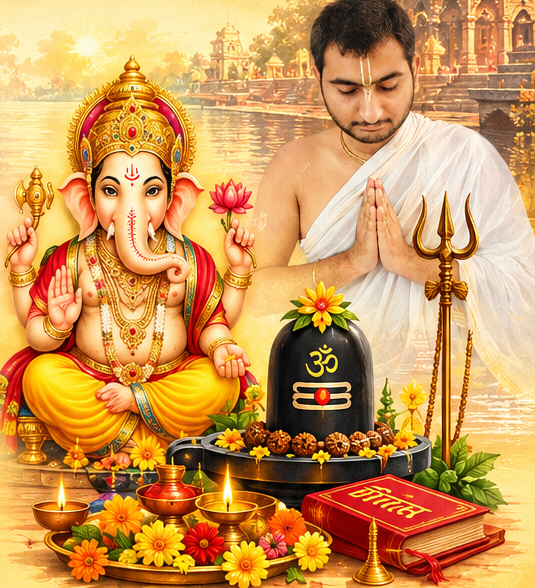

🏠
Griha Pravesh
Ganapati Puja, Vastu Shanti, Kalash Sthapana, Havan and traditional house-entry rituals.
See 2026 dates →वैदिक पूजा • संस्कार • अनुष्ठान
Authentic North Indian puja, havan, katha, sanskar and auspicious ceremony services in Hyderabad.
Hyderabad • Home Puja Services • Muhurat Guidance

पूजा • हवन • कथा • संस्कार
OUR SERVICES
Traditional ceremonies with guidance on vidhi, samagri and suitable muhurat.
Ganapati Puja, Vastu Shanti, Kalash Sthapana, Havan and traditional house-entry rituals.
See 2026 dates →Vedic marriage rituals, Ganesh Puja, Mandap Puja, Vivah Havan and traditional North Indian vidhi.
See 2026 dates →Satyanarayan Puja and Katha with traditional worship procedure and prasad guidance.
Havan, Yajna and Shanti rituals for homes, offices and auspicious occasions.
Shiva Puja and Rudrabhishek with appropriate mantras and offerings.
Naamkaran, Mundan, Upanayan and other traditional Hindu sanskar ceremonies.
Customized religious observances according to the occasion and family requirements.
Ramayan, Sundarkand, Bhagwat, Durga Saptashati and devotional paath services.
2026 SHUBH MUHURAT
These are Panchang-based planning dates. Exact lagna, choghadiya and personalized muhurat should be confirmed for the ceremony location and family details.
2026 FESTIVAL CALENDAR
Plan your family puja, katha, vrat-related puja and festival anushthan in advance.
POPULAR CEREMONIES
Baby naming ceremony with traditional puja and sankalp.
Traditional Mundan ceremony with appropriate vidhi.
Janeu / Yagyopavit ceremony with Vedic procedure.
Full puja, katha and prasad guidance.
Hanuman devotion, paath and family prayer service.
Navratri and special Devi anushthan / paath.
ABOUT SANATAN SEVA
Sanatan Seva provides traditional Hindu puja, sanskar and anushthan services with an emphasis on proper vidhi, clear guidance and respectful conduct.
North Indian Acharya
Serving families in Hyderabad for auspicious occasions, home ceremonies and traditional religious observances.
वैदिक एवं कर्मकाण्ड परंपरा से जुड़ी सेवा • बचपन से पूजा-अनुष्ठान का अभ्यास
Talk to Pandit Ji →PANCHANG NOTE
2026 dates shown here are intended as a planning reference. Hindu festival dates and exact muhurat timings can vary by city, sunrise, tithi boundaries and regional tradition. For a final booking, confirm the exact Hyderabad timing with Pandit Ji.
Vivah and Griha Pravesh should not be selected from a date list alone when a personalized muhurat is required. Family birth details and ceremony/location requirements may need to be considered.
Reference checked against Panchang sources including Drik Panchang for Hyderabad / Telangana and general 2026 festival calendars. Last reviewed: September 2026.
CONTACT
For bookings, ceremony details, samagri guidance or muhurat consultation, contact directly.